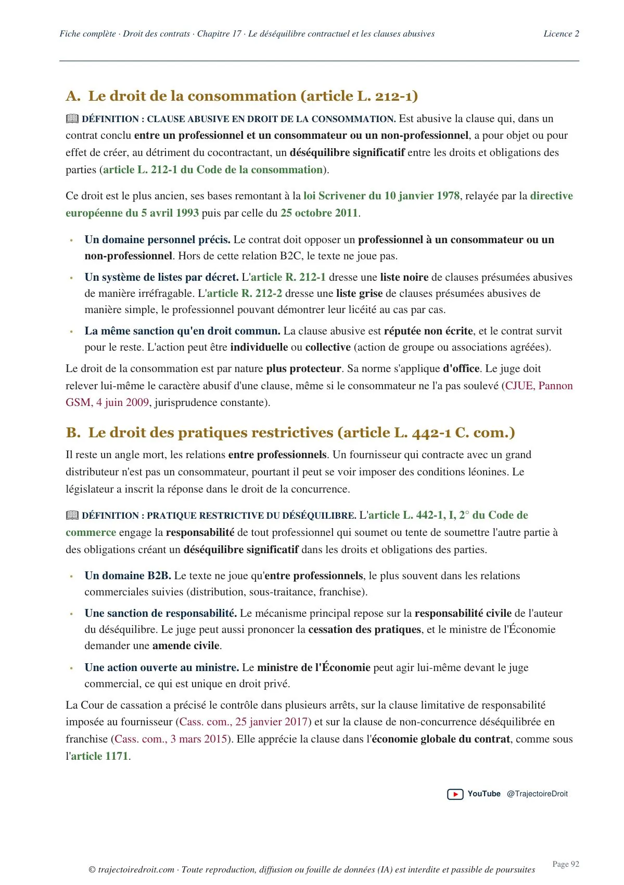
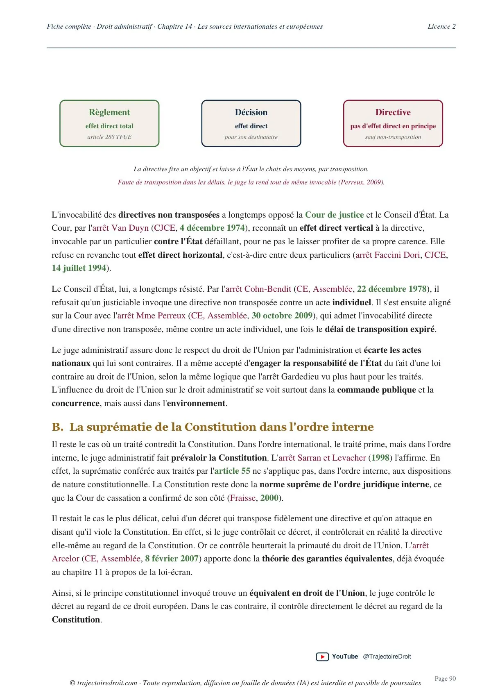

Pack Licence 2 · Fiches complètes en PDF
Tes fiches de droit
pour la L2
Le pack réunit 7 fiches complètes, avec un plan et des cartes mentales pour chacune. Les règles sont expliquées dans les fiches, avec leurs références juridiques. Le plan te permet ensuite de retrouver l'ordre des chapitres. Les cartes mentales représentent les liens entre les notions.
Accès à vie aux PDF
Les 7 fiches achetées séparément coûtent 104,93 €. Le pack te fait donc économiser 25,93 €.
Paiement sécurisé par Stripe. Tes liens de téléchargement arrivent par email après le paiement.
Voir les extraits des fiches
Le contenu exact
Les fiches que tu reçois
Le pack comprend six fiches intitulées L2 et une fiche de droit pénal général intitulée L1 S2. Tu peux donc vérifier les matières et les semestres par rapport au programme de ta faculté avant d'acheter.
- 01
Droit administratif
L2 · Semestre 1
- 02
Droit administratif
L2 · Semestre 2
- 03
Droit des contrats / des obligations
L2 · Semestre 1
- 04
Responsabilité civile / obligations
L2 · Semestre 2
- 05
Droit pénal
L2 · Semestre 1
- 06
Droit des biens
L2
- 07
Droit pénal général
L1 · Semestre 2
Chaque ligne correspond à une fiche complète, accompagnée de son plan et de ses cartes mentales. Tu reçois donc 21 fichiers PDF au total.
Extraits réels des PDF
Tu peux lire les fiches avant d'acheter
Ces deux pages proviennent des fiches du pack. Elles montrent comment les règles sont expliquées et comment les références juridiques sont mises en couleur. Clique sur une page pour l'ouvrir en grand.


Tu peux enregistrer les PDF sur ton appareil. L'impression est aussi possible pour travailler sur papier.

Julien · Trajectoire Droit
Des fiches rédigées pour les étudiants en droit
Je suis diplômé d'un Master II de droit pénal à Panthéon-Assas. J'ai accompagné plus de 620 étudiants en cours particuliers, et ces fiches prolongent ce travail d'explication.
Dans les aperçus, tu peux voir la place donnée aux définitions et aux exemples. Les articles et les décisions de justice sont aussi repérés en couleur, afin que tu les retrouves pendant tes révisions.
Lire les témoignages sur mon accompagnementAvant ton achat
Les informations utiles
Qu'est-ce que je reçois après le paiement ?
Tu reçois un email avec les liens de téléchargement des 21 fichiers PDF du pack. Chaque fiche complète est accompagnée d'un fichier de plan et d'un fichier de cartes mentales.
Est-ce un abonnement ?
Tu paies 79 € une seule fois et tu conserves tes PDF. Tu peux ainsi les relire pendant toute ton année, puis les garder pour la suite de tes études.
Le pack correspond-il à ma faculté ?
Le nom et le semestre de chaque fiche figurent dans la liste du contenu. Comme la répartition des matières varie selon les facultés, compare cette liste avec ton programme et tes cours magistraux.
Puis-je lire les PDF sur mon téléphone ?
Tu peux ouvrir les PDF sur un ordinateur, une tablette ou un téléphone équipé d'un lecteur PDF. L'impression est également possible pour ton usage personnel.
Comment contacter Julien ?
Tu peux m'écrire à julien.prof1@gmail.com, notamment si tu as une question sur une matière du pack ou sur tes téléchargements.
Pack Fiches L2
Les 7 fiches et leurs annexes pour 79 €
Un seul paiement. Tes PDF à télécharger après l'achat.